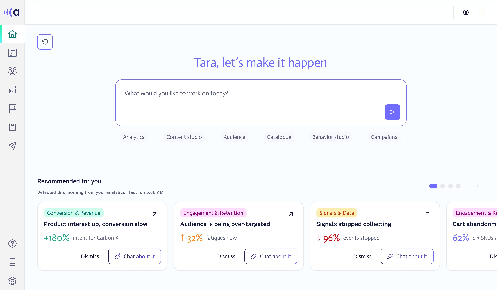
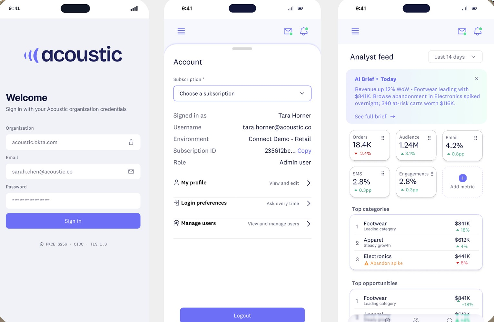
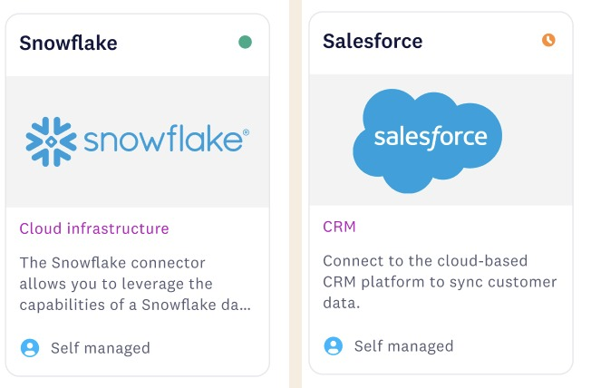
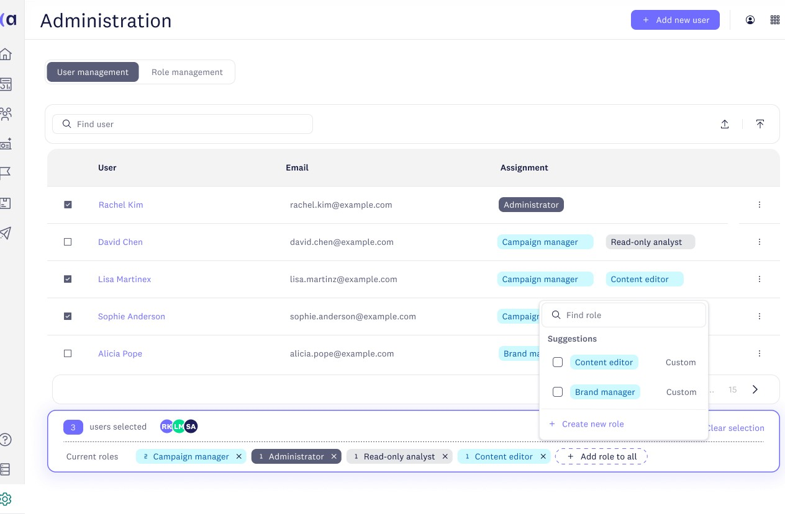
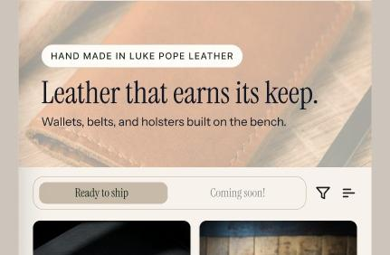
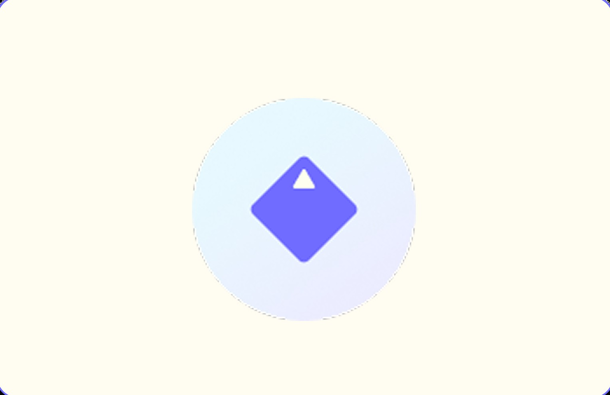
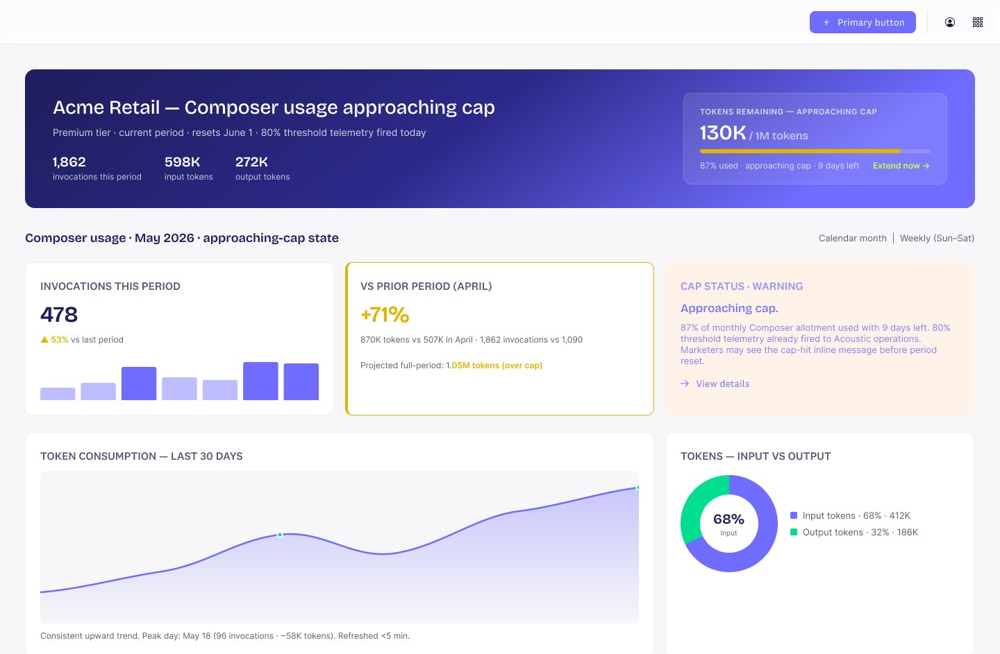

UX designer and writer making products that actually make sense.
I design the screens and write the words on them. Former teacher, still handing out gold stars for clear instructions.
Homepage revamp
Problem: A new homepage had to turn a pile of signals into something a marketer could act on.
Outcome: From baseline requirements to a full feature in 30 days, and a differentiator for the product.
Designer and writer · Acoustic Connect · 30 days
Read the case study

Pulse
The five-second gut check
3rd-party integrations
One pattern, endless uses
Advanced user permissions
Who? What? When?
Luke Pope Leather
Built to be used, not just seen
Visuals to complete stories
Animation station
AI usage dashboards
Avoid the splatAbout
Clarity in design
starts with the right words.
I'm a UX designer and writer who spent years in the classroom before moving into product. Teaching gave me a deep instinct for how people process information — what confuses them, what builds confidence, and what makes something finally click.
I bring that same thinking to digital products. Whether I'm mapping flows, writing interface copy, or iterating, I'm always asking: does this make sense to the person on the other side of the screen?
I work across the full design process — conception, interaction design, content strategy, and UX writing — often in the same project. That combination lets me close the gap between how a product is designed and how it speaks.
UX Design
- Interaction design
- Designing with AI
- Collaboration
- Vibe coding
- Prototyping
UX Writing
- Write interface copy
- Voice & tone consistency
- Error message design
- Create in plain language
- Content audits
Teaching
- Curriculum design
- Professional learning communities
- Instructional writing
- Accessibility
- EdTech design
“A user interface is like a joke. If you have to explain it, it's not that good.”
— Martin LeBlanc
How I work
Before sketching a single screen I spend time understanding the real users, the business constraints, and the language people already use. Interviews, support tickets, analytics, and stakeholder conversations all feed into a clear problem statement.
I translate research into focused problem statements and success metrics. This stage prevents us from solving the wrong thing beautifully, and keeps the team aligned on what "done" actually looks like.
Rapid exploration, tight feedback loops, and continuous refinement. I work fluidly between flows, interface design, and micro-copy so the product feels coherent at every level.
Usability testing, content reviews, and real-world feedback close the loop. I treat every release as a learning opportunity and keep refining until the experience feels solid.